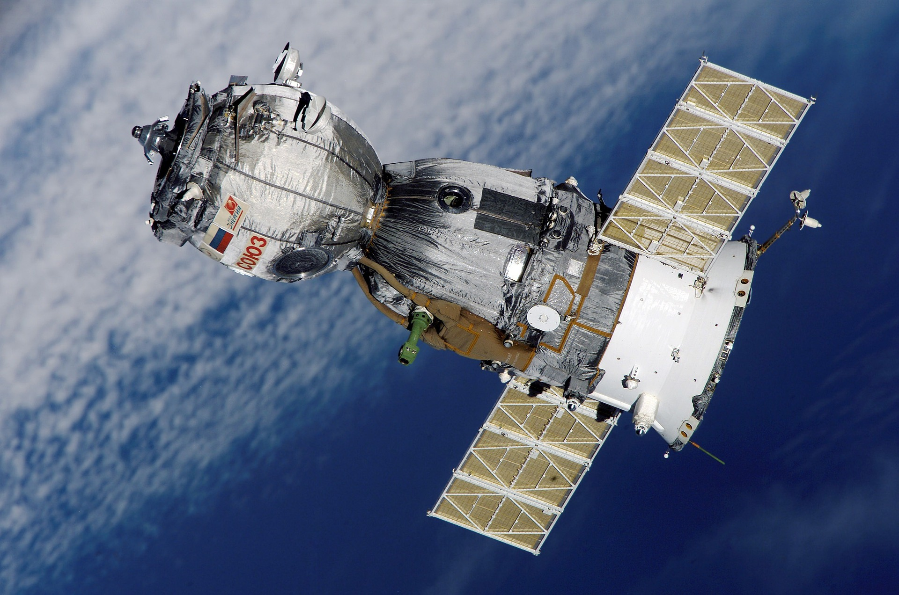

SPACE-X
V súsčasnosti vzbudzuje asi najväčšiu pozornosť súkromná spoločnosť SpaceX. Okrem toho, že plánuje poslať vesmírnych turistov na let okolo Mesiaca, jej zakladateľ Elon Musk prezentoval optimistickú víziu s pristátím prvých ľudí na Marse v roku 2024. NASA sa stanoveniu presného termínu radšej vyhýba, keďže vie, že takéto projekty kolosálnych rozmerov sa ťažko plánujú a zároveň má skúsenosti s tým, že optimistické scenáre sa neskôr musia zmeniť a misie odsunúť na neskoršie termíny. Ruský Roskosmos a čínska vesmírna agentúra CNSA by chceli dostať svojich kozmonautov na Mesiac okolo roku 2030 a prvú posádku k Marsu vyslať niekedy v rokoch 2040 až 2060.

Misia Crew-1
Keď raketa SpaceX Falcon vyniesla v novembri 2020 kapsulu Crew Dragon spoločnosti na obežnú dráhu, bola to prvá misia, ktorá použila súkromnú kozmickú loď certifikovanú NASA na vyslanie celej posádky astronautov na Medzinárodnú vesmírnu stanicu (ISS). Americká vesmírna agentúra po prvýkrát pridelila veľkú časť dizajnu, vývoja a testovania kozmických lodí hodnotených ľuďom súkromnému sektoru. Misia SpaceX pripravuje pôdu pre viac komerčných letov s výskumníkmi, profesionálnymi astronautmi a prípadne platiacimi pasažiermi na obežnú dráhu, čo poukazuje na budúcnosť, kde sú lety ľudí do vesmíru nielen cenovo dostupnejšie, ale aj rutinné.

Tiangong
Čína zriaďuje novú základňu pre astronautov. 60-tonový Tiangong, ktorý má byť dokončený do konca roku 2022, bude jedinou orbitálnou stanicou s posádkou okrem Medzinárodnej vesmírnej stanice (ISS), ktorá bude pravdepodobne vyradená v nasledujúcom desaťročí. Čínsky národný vesmírny úrad (CNSA) spustil prvý jadrový modul stanice v apríli 2021 a o dva mesiace neskôr vyslal astronautov na návštevu. Na dokončenie projektu plánuje CNSA 11 štartov, ktoré budú zahŕňať misie s posádkou a dodávku dvoch dodatočných modulov na stanicu na nízkej obežnej dráhe Zeme. Po dokončení bude Tiangong schopný hostiť troch astronautov na predĺžené pobyty a bude zahŕňať laboratórium so 14 experimentálnymi stojanmi a 50 externými portami na štúdium prostredia vo vesmíre.

Zhurong
Čína sa v máji stala len druhou krajinou na svete, ktorej sa podarilo pristáť s roverom na Marse. Keď kozmická loď Tianwen-1 vyštartovala v júli 2020, rover Zhurong bol na palube; vo februári vstúpil na obežnú dráhu Marsu. Ale touchdown bol len začiatok. V júli začal rover metodicky prechádzať terénom Červenej planéty, aby preskúmal a zdokumentoval jej jedinečnú topografiu. Denné snímky zhotovené počas tejto cesty budú tiež informovať o vizuálnej polohe roveru a plánovaní trasy pre jeho návrat domov.

Voyager Station
Ďalšia dimenzia vesmírnej turistiky je na ceste: špičkový hotel, ktorý by mohol na nízku obežnú dráhu urobiť viac ako jednodňový výlet. Po dokončení by stanica Voyager bola prvou komerčnou vesmírnou stanicou fungujúcou s umelou gravitáciou a najväčšou ľudskou štruktúrou vo vesmíre. Spoločnosť Orbital Assembly Corp. vo februári predstavila plány na vybudovanie menšieho pozemného montážneho systému na Zemi. Ale skutočná dohoda - trojkruhová stanica - bude postavená na obežnej dráhe pomocou automatizácie a telerobotiky. Stanica pojme až 440 hostí v 24 pretlakových moduloch a bude vybavená 44 núdzovými návratovými vozidlami s automatizovaným riadením letu. Cieľom spoločnosti je privítať hostí už v roku 2027.
